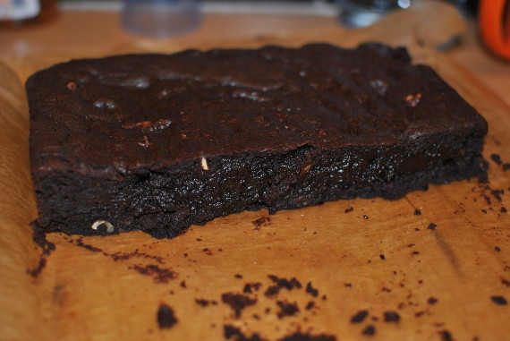

Brownies ohne Mehl

- Zubereitung: ca. 20 Minuten
- Backzeit: ca. 25 Minuten
- Für 12 Stück
Zutaten
- 200 g Butter
- 400 g Zartbitterschokolade (mindestens 70%)
- 6 Eier
- 240 g Zucker
- 1 Vanillestange
- 150 g Walnüsse
- 60 g ungesüßtes Kakaopulver
- 1 Prise Salz
- abgeriebene Schale von 1 Orange
Zubereitung
- Den Backofen auf 175° Celsius vorheizen. Die Butter und die Schokolade schmelzen, glatt rühren und abkühlen lassen. Die Eier, Zucker und das ausgekratzte Vanillemark hell und schaumig schlagen.
- Die Walnüsse grob hacken. Mit Kakao, Salz und Orangenschale unter die Eimasse rühren. Die Schokoladen-Butter-Mischung behutsam darunterziehen.
- Ein tiefes Backblech mit Backpapier auslegen und den Teig darauf streichen. In der Mitte des Ofens 25 Minuten backen. Abkühlen lassen und in Stücke schneiden.